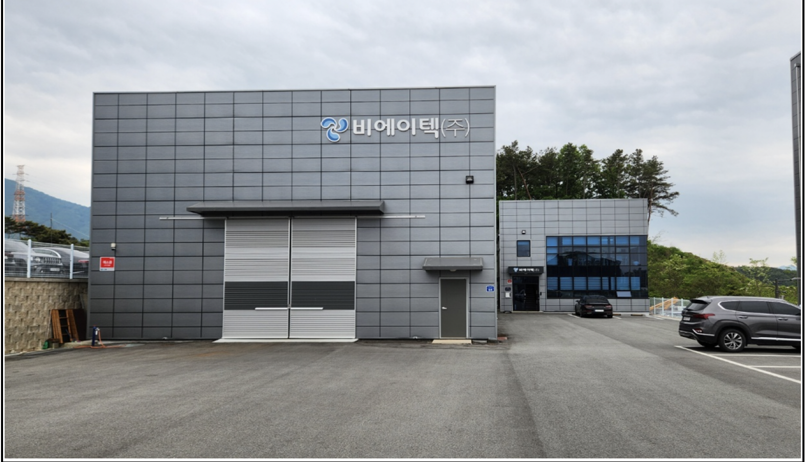
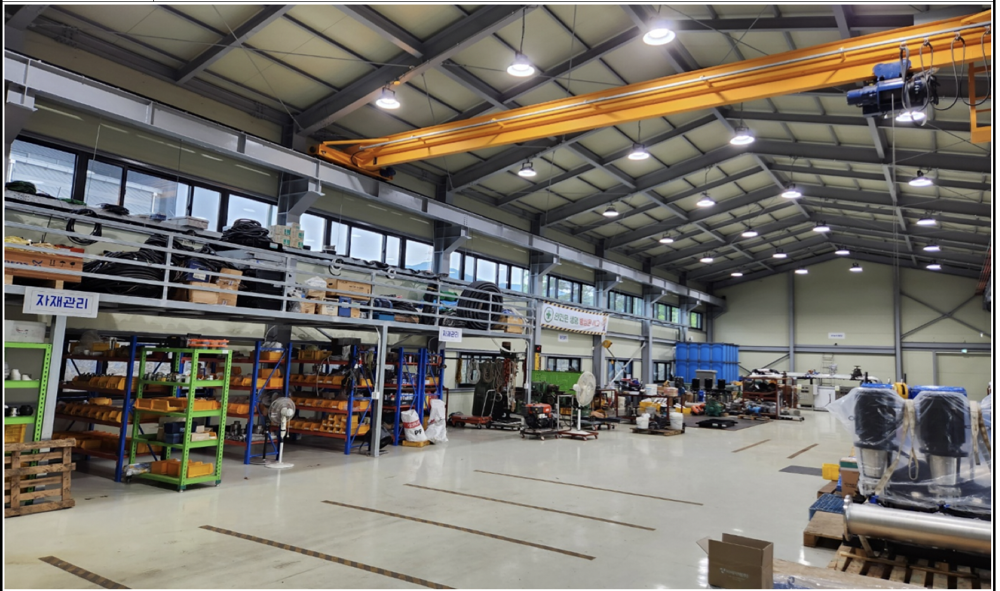
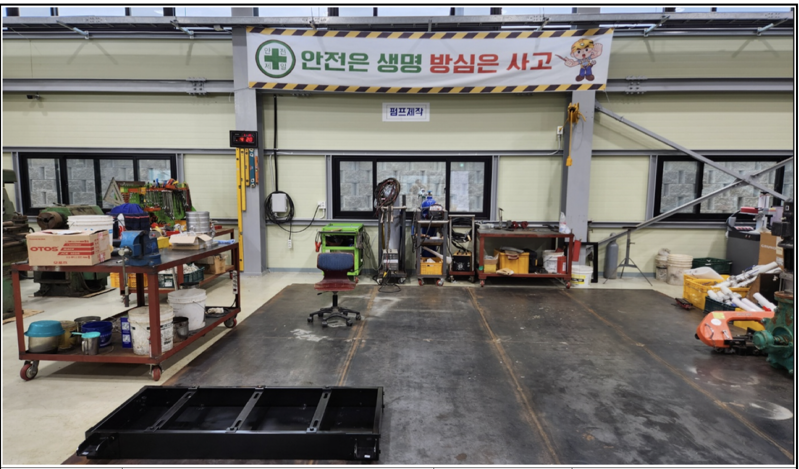
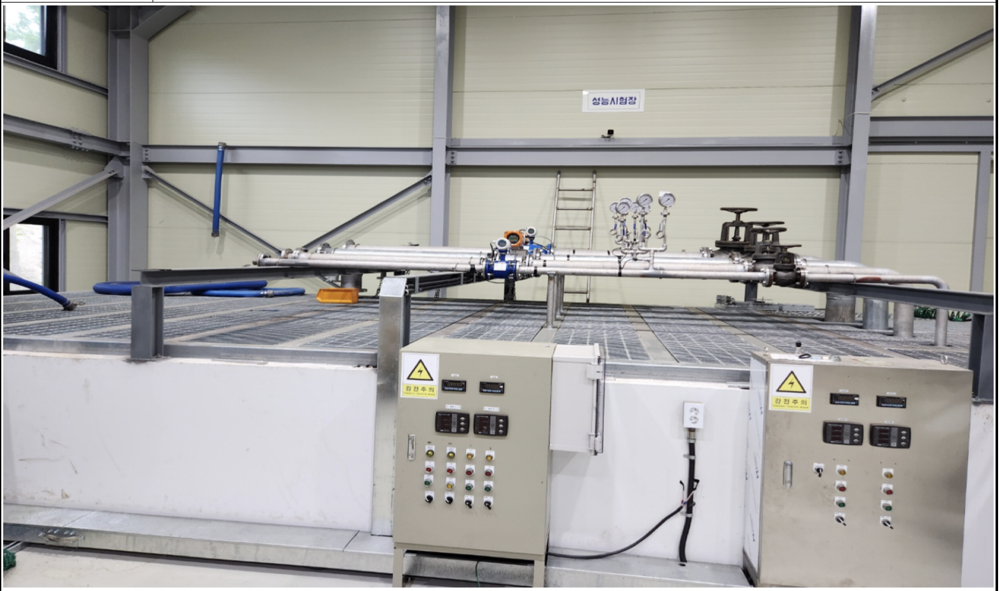
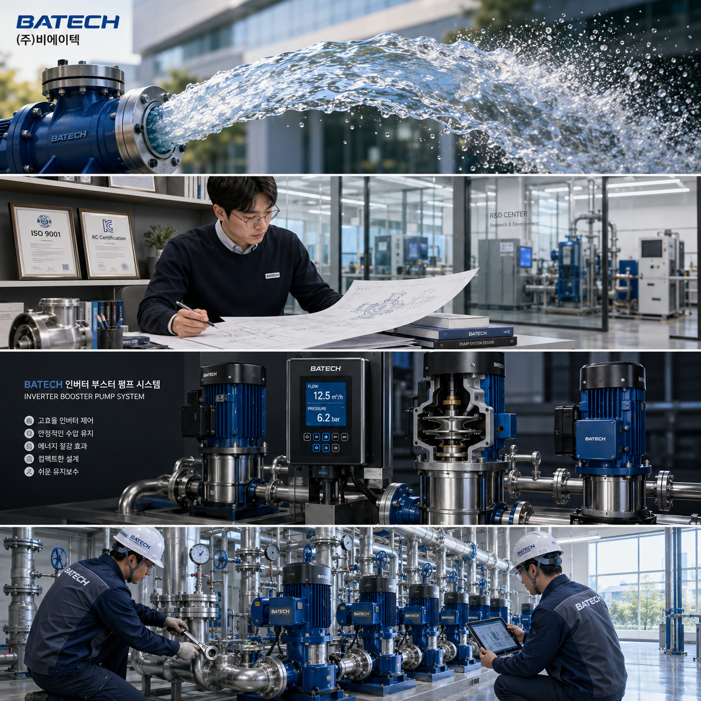

깨끗한 물을 향한 비에이텍의 도전과 혁신을 소개합니다.
비에이텍(주)은 수처리 분야의 전문 기업으로, 다양한 산업 현장에 최적화된 펌프 솔루션을 제공합니다. 끊임없는 기술 개발과 품질 관리를 통해 고객의 신뢰를 쌓아왔습니다.
| 대표자 | 조세연 |
| 주소 | 강원특별자치도 춘천시 퇴계공단2길 64 |
| 전화 | 033-264-9243 |
| 팩스 | 033-251-5747 |
| 이메일 | gwf0123@hanmail.net |
메인비즈 인증 갱신 (유효기간 ~2027.09.13)
ISO 9001 품질경영시스템 인증 획득
KC 인증 획득, 제품 안전성 검증 완료
수처리 펌프 6종 라인업 구축
비에이텍(주) 설립, 수처리 사업 시작
~2027.09.13
품질경영
제품안전
비에이텍(주)의 첨단 제조 설비와 성능 시험 시설을 소개합니다.

강원 춘천 퇴계공단에 위치한 비에이텍(주) 본사 및 공장 전경

첨단 자동화 설비를 갖춘 공장 내부 생산 라인

6종 펌프를 정밀 제작하는 전용 제작 시설

제품 출하 전 성능 및 내구성을 검증하는 시험 시설
비에이텍 홍보 브로슈어를 확인하세요.

카드뉴스를 통해 깨끗한 물의 가치를 전달합니다.
비에이텍의 6종 펌프 제품 라인업입니다. 클릭하면 상세 지침서(PDF)가 새 탭에서 열립니다.